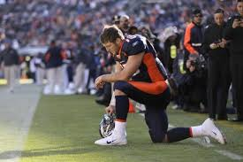

Tim Tebow
Tim Tebow is my favorite athlete and I have followed his career since his playing days for the Florida Gators. During his time with the Gators he won 2 BCS National Championships and a Heisman Trophy. My fondest memories of him though are when he played for the Denver Broncos in the NFL. I think he is an amazing leader on the field as well being one of the most kind human beings off of it.